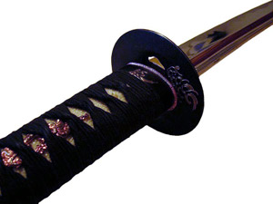
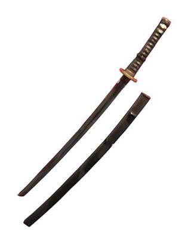
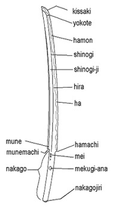
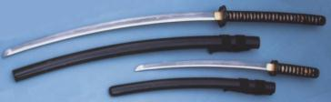

Katana
The katana (刀) is Japanese for backsword and often refers to the uchigatana after the Muromachi period, which is a type of Japanese sword (日本刀, nihontō?), also commonly referred to as a "samurai sword",and generally defined as the standard size moderately curved (as opposed to the older "tachi" style featuring more curvature) Japanese sword with a blade length of greater than 60 cm (23.6 inches). The katana is characterized by its distinctive appearance: a curved, slender, single edged blade, circular or squared guard, and long grip to accommodate two hands. It has historically been associated with the samurai of feudal Japan, and has become renowned for its sharpness and cutting ability.

Forging & construction
The authentic Japanese sword is made from a specialized Japanese steel called "Tamahagane" which consist of combinations of hard, high carbon steel and tough, low carbon steel. There are advantages and setbacks to both types of steel. High-carbon steel is harder and able to hold a sharper edge than low-carbon steel but it is more brittle and may break in combat. Having a small amount of carbon will allow the steel to be more malleable, making it able to absorb impacts without breaking but becoming blunt in the process. The makers of a katana take advantage of the best attributes of both kinds of steel. This is done by a number of methods, most commonly by making a U-shaped piece of high-carbon steel (the outer edge) and placing a billet of low-carbon steel (the core) inside the U, then heating and hammering them into a single piece. Some sword-makers use four different pieces (a core, an edge, and two side pieces), and some even use as many as five. The block of combined steel is heated and hammered over a period of several days, and then it is folded and hammered to squeeze the impurities out. Generally a katana is folded no more than sixteen times, then it is hammered into a basic sword shape. At this stage it is only slightly curved or may have no curve at all. The gentle curvature of a katana is attained by a process of quenching; the sword maker coats the blade with several layers of a wet clay slurry
which is a special concoction unique to each sword maker, but generally it is composed of clay, water, and sometimes ash, grinding stone powder and/or rust.
The edge of the blade is coated with a thinner layer than the sides and spine of the sword, then it is heated and then quenched in water (some sword makers use oil to quench the blade).
The clay slurry provides heat insulation so that only the blade's edge will be hardened with quenching and it also causes the blade to curve due to reduced lattice strain along the spine. This process also creates the distinct swerving line down the center of the blade called the hamon which can only be seen after it is polished; each hamon is distinct and serves as a katana forger's signature. The hardening of steel involves altering the microstructure or crystalline structure of that material through quenching it from a heat above 800 °C (1,472 °F) (bright red glow), ideally no higher than yellow hot. If cooled slowly, the material will break back down into iron and carbon and the molecular structure will return to its previous state. However, if cooled quickly, the steel's molecular structure is permanently altered. The reason for the formation of the curve in a properly hardened Japanese blade is that iron carbide, formed during heating and retained through quenching, has a lesser density than its root materials have separately. After the blade is forged it is then sent to be polished. The polishing takes between one and three weeks. The polisher uses finer and finer grains of polishing stones until the blade has a mirror finish in a process called glazing. This makes the blade extremely sharp and reduces drag making it easier to cut with. The blade curvature also adds to the cutting power.
Etymology

In the strictest sense, the term katana in Japanese is applied to any kind of single-edged sword, of any origin, and does not necessarily refer to a Japanese sword. "Katana" was originally used as a general term for a single-edged sword having a "sori" or curvature of the blade. While the "sugata" or form can take many shapes, including double edged, the term is now used incorrectly to describe nihontō that are 2 shaku (606 mm / 24 in) and longer, also known as "dai" or "daito" among Western sword enthusiasts. This distinguishes them from the straight-bladed chokutō, which was brought from China by way of Korea The chokutō is speculated to have been the first "sugata" type the katana took on, being modeled after the imported swords. This emergence of the first nihontō took place the same time period as the beginning of Japanese feudalism and recognition of the daimyo or "great family" in the late ninth century.
Pronounced kah-ta-nah, the kun'yomi (Japanese reading) of the kanji 刀, originally meaning dao (sword) or knife/saber in Chinese, the word has been adopted as a loanword by the Portuguese language. In Portuguese the designation (spelled catana) means "large knife". As Japanese does not have separate plural and singular forms, both "katanas" and "katana" are considered acceptable forms in English. Another term, Daikatana (usually given as the kanji 大刀), is a pseudo-Japanese term meaning "large sword", derived from the Chinese dadao. The reading mistake comes from the different ways Japanese Kanji can be read, depending on their combination or not in a word. It has been used in some (English-language) fictional works to represent a kind of large katana; the video game Daikatana, for example used this pseudo-term as its title. The correct name of this type of weapon is tachi, and is different from ōtachi and nodachi.
Pronounced kah-ta-nah, the kun'yomi (Japanese reading) of the kanji 刀, originally meaning dao (sword) or knife/saber in Chinese, the word has been adopted as a loanword by the Portuguese language. In Portuguese the designation (spelled catana) means "large knife". As Japanese does not have separate plural and singular forms, both "katanas" and "katana" are considered acceptable forms in English. Another term, Daikatana (usually given as the kanji 大刀), is a pseudo-Japanese term meaning "large sword", derived from the Chinese dadao. The reading mistake comes from the different ways Japanese Kanji can be read, depending on their combination or not in a word. It has been used in some (English-language) fictional works to represent a kind of large katana; the video game Daikatana, for example used this pseudo-term as its title. The correct name of this type of weapon is tachi, and is different from ōtachi and nodachi.
History
The katana originated in the Muromachi period (1392–1573) as a result of changing battle conditions requiring faster response times. The katana facilitated this by being worn with the blade facing up, which allowed the samurai to draw and cut their enemy in a single motion. Previously, the curved sword of the samurai had been worn with the blade facing down. The length of the katana's blade varied considerably during the course of its history. In the late 14th and early 15th centuries, katana blades tended to be between 70 and 73 cm (27.6 and 28.7 inches) in length. During the early 16th century, average length was much closer to 60 cm (23.6 inches), but late in the 16th century, it was again approximately 73 cm (28.7 in). The katana was paired most often with the wakizashi or shōtō, a similarly made but shorter sword, both worn by the members of the warrior class. It could also be worn with the tantō, an even smaller similarly shaped knife. The katana and wakizashi when paired with each other were called the daishō and they represented the social power and personal honor of the samurai.